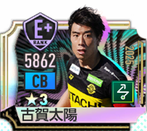
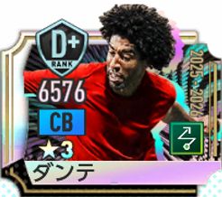
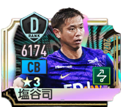

古賀太陽
★3 SP日本CBムービング組立CBⅡ入手不可
最大総合力
14,409
初期 5,862 → +8,547
最大総合力は全419選手中263位、CB適性では41位。詳細ステータスではパスカット・マーク・コンタクトが高く、DEF系の能力が目立つCBです。
全選手263位 / 419人
CB適性41位 / 62人
ムービング53位 / 91人
組立CB16位 / 21人
基本情報
- playerID
- P0087
- 実装日
- 2026/01/22
- レアリティ
- ★3 SP
- 国籍
- 日本
- 成長タイプ
- 超早熟
- ポリシー
- ムービング
- メインポジション
- CB
- 適性ポジション
- CB
- プレイスタイル
- 組立CBⅡ
- 初期総合力
- 5,862
- 最大総合力
- 14,409
入手情報
- 現在
- 入手不可
- 入手方法
- ガチャ
- 入手場所
- JリーグセレクトSP選手スカウト【第一弾】
- 入手可能期間
- 2026年6月9日まで
最大総合力ランキング
全選手263位 / 419
★3263位 / 394
CB適性41位 / 62
ムービング53位 / 91
組立CB16位 / 21
詳細ステータス
表示
最大強化時の詳細値。初期表示はSP選手評価ツールと同じSS～Gの9段階ランクです。「数値」に切り替えると実数値を確認できます。
SHO
E2,571
SP選手基準カテゴリ合計
PAS
D2,658
SP選手基準カテゴリ合計
DRB
E2,621
SP選手基準カテゴリ合計
DEF
A2,907
SP選手基準カテゴリ合計
PHY
A2,833
SP選手基準カテゴリ合計
SPD
F1,740
SP選手基準カテゴリ合計
SHOE SP選手基準カテゴリ合計 2,571
決定力
D853
キック力
D869
冷静さ
E849
PASD SP選手基準カテゴリ合計 2,658
ショートパス
C901
ロングパス
C907
キック精度
F850
DRBE SP選手基準カテゴリ合計 2,621
突破力
E880
キープ力
E869
ボールタッチ
F872
DEFA SP選手基準カテゴリ合計 2,907
タックル
B911
パスカット
A1,005
マーク
A991
PHYA SP選手基準カテゴリ合計 2,833
ジャンプ
C888
コンタクト
A979
スタミナ
B966
SPDF SP選手基準カテゴリ合計 1,740
走力
D886
敏捷性
G854
強み・低めの能力
表示
強み TOP6SP選手基準のSS～G
1パスカットA1,005SP選手基準詳細値
2マークA991SP選手基準詳細値
3コンタクトA979SP選手基準詳細値
4スタミナB966SP選手基準詳細値
5タックルB911SP選手基準詳細値
6ロングパスC907SP選手基準詳細値
低め TOP6SP選手基準のSS～G
1冷静さE849SP選手基準詳細値
2キック精度F850SP選手基準詳細値
3決定力D853SP選手基準詳細値
4敏捷性G854SP選手基準詳細値
5キック力D869SP選手基準詳細値
6キープ力E869SP選手基準詳細値
6カテゴリ順位
| カテゴリ | 数値 | 順位 |
|---|---|---|
| DEF | 2,907 | 89位 / 351人 |
| PHY | 2,833 | 101位 / 351人 |
| PAS | 2,658 | 229位 / 351人 |
| SHO | 2,571 | 247位 / 351人 |
| DRB | 2,621 | 288位 / 351人 |
| SPD | 1,740 | 315位 / 351人 |
17項目の特徴的なステータス順位
パスカット1,00559位 / 351人
マーク99169位 / 351人
コンタクト97978位 / 351人
スタミナ966106位 / 351人
タックル911142位 / 351人
ロングパス907157位 / 351人
スキル
銅冴え渡るインターセプト
特徴
銀瞬間の球際力
発動状態：好調
銀エンドレスマーカー
発動状態：好調
選手傾向
-2 ～ +2 の登録値をそのまま可視化しています。
攻撃
-1
守備
+1
ドリブル
-1
シュート
-1
ロングシュート
-1
ショートパス
0
ロングパス
0
スルーパス
-1
切り込み
-1
キープ
-1
ディレイ
0
飛び出し
-1
フェイント
-1
プレス
+1
プレイスタイル
組立CBⅡプレイスタイル補正：総合力 +571
プレイスタイル補正の内訳を見る
決定力+32
キック力+32
冷静さ+32
ショートパス+32
ロングパス+32
キック精度+32
突破力+32
キープ力+32
ボールタッチ+32
タックル+40
パスカット+40
マーク+40
ジャンプ+40
コンタクト+40
スタミナ+36
走力+32
敏捷性+32
代用・互換選手
代用選手
同ポリシー＋同ポジション＋同プレイスタイル。ベースがⅡのためⅡ・Ⅲを表示。

フィルジル・ファン・ダイク
最大総合力 15,607
入手可能
ダンテ
最大総合力 15,155
入手可能
塩谷司(2026)
最大総合力 14,754
入手可能互換選手
同ポジション＋同プレイスタイル。最大総合力順。

同じポジションのおすすめ
CB適性の最大総合力上位候補
CBのランキングを見る →
同じポリシーのおすすめ
ムービング × CBの上位候補
同じプレイスタイルのおすすめ
組立CBの最大総合力上位候補
関連フォーメーションコンボ
CB / 組立CBⅡの条件に一致。
ブラウ・グラーナ'15
金タックル +60%マーク +80%決定力 +80%キック精度 +100%
ディアボロ・ディ・ミラノ'99
金キック力 +80%突破力 +80%ジャンプ +80%コンタクト +80%
エンカルナードス'23
金冷静さ +80%パスカット +80%マーク +80%ジャンプ +80%
アルビセレステ'01
金ジャンプ +80%コンタクト +80%走力 +80%敏捷性 +80%
ブルー・ガル’22
銀コンタクト +80%パスカット +80%キック精度 +80%
ディアブル・ルージュ'18
銀キープ力 +60%ジャンプ +60%スタミナ +60%
グリーン・ファルコンズ'98
銀ロングパス +80%冷静さ +80%敏捷性 +80%
イ・フリウラーニ’98
銀パスカット +80%キープ力 +80%敏捷性 +80%
アズーリ’06
銀突破力 +60%ジャンプ +60%敏捷性 +60%
ロス・グアラニエス'02
銅キック力 +50%マーク +50%
関連ツール
データ基準：sakatsuku2026_DB 2026/09/07版